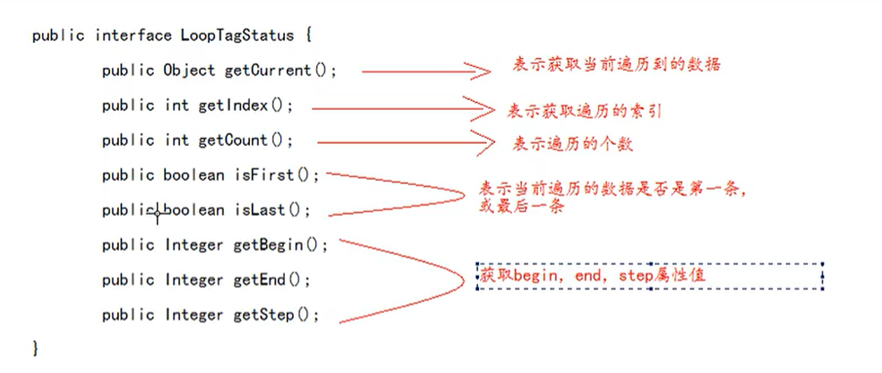

$JSTL$ 标签库简介
$EL$ 是用来代替 $jsp$ 里的表达式脚本，而 $JSTL$ 则是用来代替 $jsp$ 里的代码脚本。
使用方法
$set$ 标签
<c: set /> 将键值存放到域对象中。
其中有三个属性：$scope$ 指定域对象，$var$ 表示键，$value$ 表示值。
1
2
| <c:set scope="request" var="name" value="zhangsan"/>
${requestScope.name}
|
$if$ 标签
<c:if> </c:if>
其中的属性 $test$ 中可以输入判断标准，里面使用 $EL$ 。
1
2
3
| <c:if test="${12 == 12}">
<h2>12</h2>
</c:if>
|
注意：没有 $else if$ 。
多路选择标签
<c:choose> <c:when> <c:otherwise>
作用：多路判断，形如 swith…case…default。
$choose$ 标签开始选择判断
$when$ 标签表示每一种判断情况
其中的 $test$ 属性表示当前这种判断情况的值
$otherwise$ 标签
注意：
1、标签里不能使用 $html$ 注释。如果需要注释，则使用 $jsp$ 注释。
2、$when$ 标签的父标签一定要是 $choose$ 标签。
1
2
3
4
5
6
7
8
9
10
11
12
| <c:set scope="request" var="height" value=178 />
<c:choose>
<c:when test="${requestScope.height > 180}">
<h2>大于180</h2>
</c:when>
<c:when test="${requestScope.height > 170}">
<h2>大于170</h2>
</c:when>
<c:when test="${requestScope.height > 160}">
<h2>大于160</h2>
</c:when>
</c:choose>
|
$forEach$ 标签
<c:forEach></c:forEach>
属性：
$begin$ 设置开始的索引
$end$ 设置结束的索引
$var$ 循坏体的变量
$item$ 表示遍历的集合
$step$ 表示遍历的步长值(即 i+= 2 –> step=”2”)
$varStatus$ 表示当前遍历到的数据的状态
1
2
3
4
5
6
7
8
9
10
11
12
13
14
15
16
17
18
19
20
21
22
23
24
25
26
27
28
29
30
31
32
33
| <c:forEach var="i" begin="1" end="10">
<h2>${i}</h2>
</c:forEach>
<%
request.setAttribute("arr",new String[]{"123","456"});
Map<String,Object> m = new HashMap<>();
m.put("key1","value1");
m.put("key2","value2");
m.put("key3","value3");
request.setAttribute("m",m);
%>
<c:forEach items="${requestScope.arr}" var="x">
<h2>${x}</h2>
</c:forEach>
<c:forEach items="${requestScope.m}" var="x">
<h2>${x.key}</h2>
<h2>${x.value}</h2>
</c:forEach>
<%
List<People> list = new ArrayList<>();
list.add(new People(1,"张三",12));
list.add(new People(2,"李四",15));
list.add(new People(3,"王五",18));
request.setAttribute("list",list);
%>
<c:forEach var="x" items="${requestScope.list}">
${x.id} ${x.name} ${x.age}
</c:forEach>
|
$varStatus$ 中的几种方法
